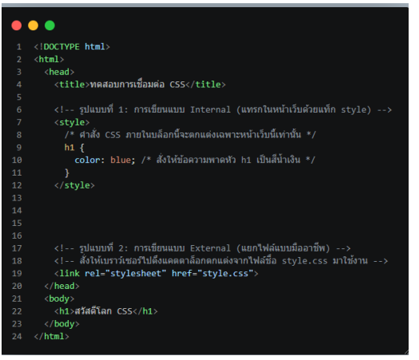
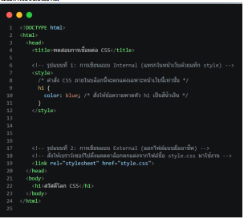
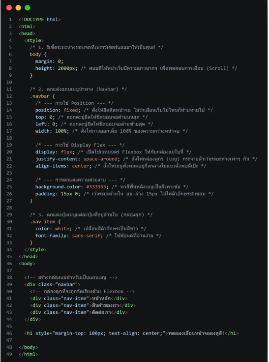

1. พื้นฐานและการเชื่อมต่อ CSS
- Internal CSS (สไตล์ชีตภายใน): เขียนแทรกในไฟล์ HTML ภายใต้แท็ก
<style>เหมาะกับเว็บหน้าเดียวหรือขนาดเล็ก แต่ส่งผลให้เกิดโค้ดซ้ำซ้อนถ้ามีหลายหน้า - External CSS (สไตล์ชีตภายนอก): แยกไฟล์ต่างหากเป็นนามสกุล .css แล้วดึงมาใช้ผ่านแท็ก
<link>เป็นวิธีมาตรฐานระดับมืออาชีพเพราะช่วยให้แก้ไขจุดเดียวแล้วอัปเดตพร้อมกันทั้งเว็บไซต์ - CSS Selectors: เครื่องมือชี้เป้าหมายเพื่อตกแต่งองค์ประกอบ ประกอบด้วย Tag Selector (กว้างที่สุด เปลี่ยนทุกแท็กที่ระบุ), Class Selector (ใช้จุด
.นำหน้า เหมาะสำหรับจัดกลุ่มเฉพาะกิจ) และ ID Selector (ใช้แฮชแท็ก#เจาะจงที่สุด ห้ามซ้ำกันในหนึ่งหน้า)

2. ระบบ Box Model (ทฤษฎีกล่อง)
เบราว์เซอร์จะมองทุกองค์ประกอบบนหน้าเว็บเป็นกล่องสี่เหลี่ยม ซึ่งประกอบด้วยพื้นที่ 4 ชั้นหลักจากด้านในออกด้านนอก
- Content: พื้นที่เนื้อหาที่แท้จริง กำหนดขนาดได้ด้วยความกว้าง (Width) และความสูง (Height)
- Padding (พื้นที่ใน): ระยะห่างระหว่างเนื้อหากับเส้นขอบกล่อง เปรียบเสมือน "พลาสติกกันกระแทก"
- Border (เส้นขอบ): กำแพงกั้นระหว่างพื้นที่ด้านในและด้านนอก เปรียบเสมือน "กรอบรูป"
- Margin (พื้นที่นอก): ระยะห่างภายนอกกล่องที่ใช้ผลักกล่องอื่นออกไป เปรียบเสมือน "การเว้นระยะห่างทางสังคม"

3. การจัดตำแหน่ง (Layout Positioning)
เทคนิคควบคุมพิกัดและการจัดวางกล่องข้อความหรือวัตถุต่าง ๆ บนหน้าจอ
- Display: กำหนดพฤติกรรมการกินพื้นที่ของกล่อง เช่น Block (จองพื้นที่เต็ม 100% ของบรรทัด), Inline (ใช้พื้นที่เท่าขนาดเนื้อหาจริง วางเรียงต่อกันได้) และ Flex (เวทมนตร์จัดเลย์เอาต์ยุคใหม่ที่ช่วยจัดเรียงวัตถุภายในให้ยืดหยุ่น กระจายตัว หรืออยู่กึ่งกลางได้อย่างง่ายดาย)
- Position: ดึงกล่องหลุดออกจากระบบระเบียบปกติเพื่อระบุพิกัดตรง ๆ เช่น Relative (ขยับจากจุดเดิมโดยเว้นที่ว่างเดิมไว้), Absolute (หลุดจากวงโคจรปกติเพื่อแปะทับบนกล่องแม่) และ Fixed (ตอกตะปูยึดติดกับหน้าจอ ไม่ขยับไปไหนแม้จะเลื่อนสกอลล์เม้าส์ เช่น แถบเมนู Navbar ด้านบน)
